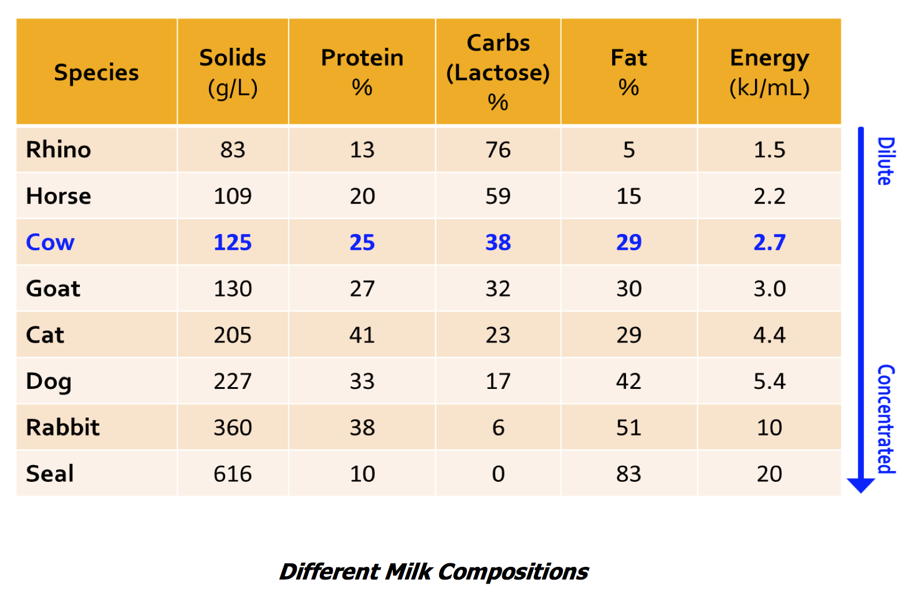

Dog and cat milk have very different nutrient composition than normal cow's milk. Cow's milk is dilute (contains less solids per litre) and has a lower energy and protein content than both dog & cat milk. This is because cows are born well-developed (precocial), are slower growing and need less nutrients in their milk than puppies or kittens.

The largest nutrient component in cow's milk is lactose, but this is not well-tolerated by puppies & kittens as they have lower levels of digestive enzymes to handle lactose. Dog milk contains high levels of fat, and this means it is very high in energy to support the increased energy demands of growing puppies. Growing puppies particularly need high levels of the Omega-3 fatty acids, which are vital for good brain development. However, cow's milk contains very little omega-3. Cat's milk is very high in protein, as being true carnivores, they use protein for both growth & energy. The fast growth rates of kittens mean that if they do not receive sufficient protein, they are more likely to have stunted growth. Cats also have a specific requirement for the essential nutrient taurine, which is only found in low quantities in cow's milk. A taurine deficiency in kittens can lead to a range of serious problems including reduced growth rates, blindness & heart failure.
Milk replacer provides all the nutrients required for growing dogs & cats, in a highly digestible form. Young animals that do not get the correct nutrition early in life, tend to have poor growth rates and a range of health problems. Often these problems are ongoing into adult life, and lead to increased vet costs over the life of the animal. Feeding a good quality milk replacer is therefore critical in achieving the best health outcomes for young animals. This is particularly the case for orphaned animals, those from large litters that don't receive sufficient mother's milk, or when the mother animal is sick.
According to what we have found, we resourced from organic farms with premium environment. All goats are free-caged to guarantee no any preservatives and antibiotic. The advanced low-temperature wet mixture technology has been applied to guarantee the best quality. Special EGF factor can enhance the growth and repairmen of digestive system which improves prevention for diseases effectively. Smaller molecular of goat milk is easy for nutrition absorption.
In addition, the leading formula of low lactose that keeps essential protein with low level of lactose guarantees full range of nutrition to your dog. Specially added Omega 3 and 6 to improve brain development and whey protein & casein to build up a healthy body. Various amino acids enriched enhance healthy skin and coat, while multi-vitamins and minerals provide full range of nutrition supplement, especially for pregnancy, growth and recovery.
For the cat, taurine enriched goats milk could benefit version and immune systems development which is able to prevent against diseases and functional defect.
There are 3 comments
Complicated!
Too complicated to read. It is boring.
ReplyAgree to you
It is new for animal nutrition study to apply dairy products. It seems that supplying certain amount of milk is good for both cat and dog, but I have to say it is also cautious as some milk can make allergy for those pets. Do not take too much.
Reply